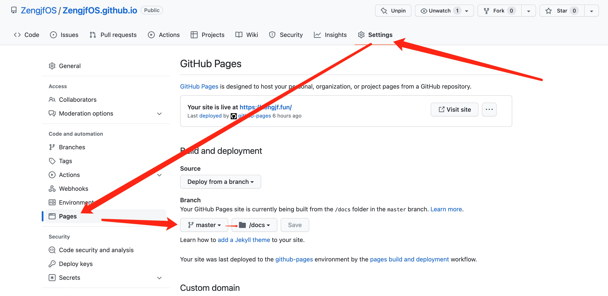
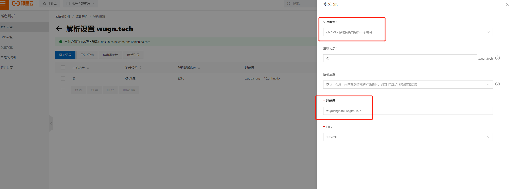
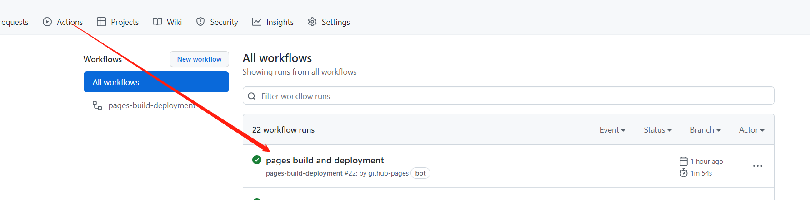
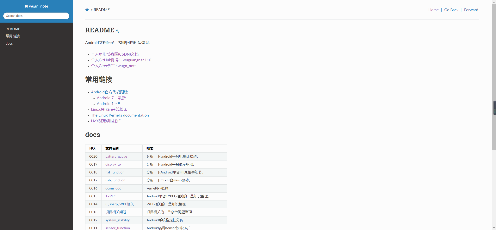
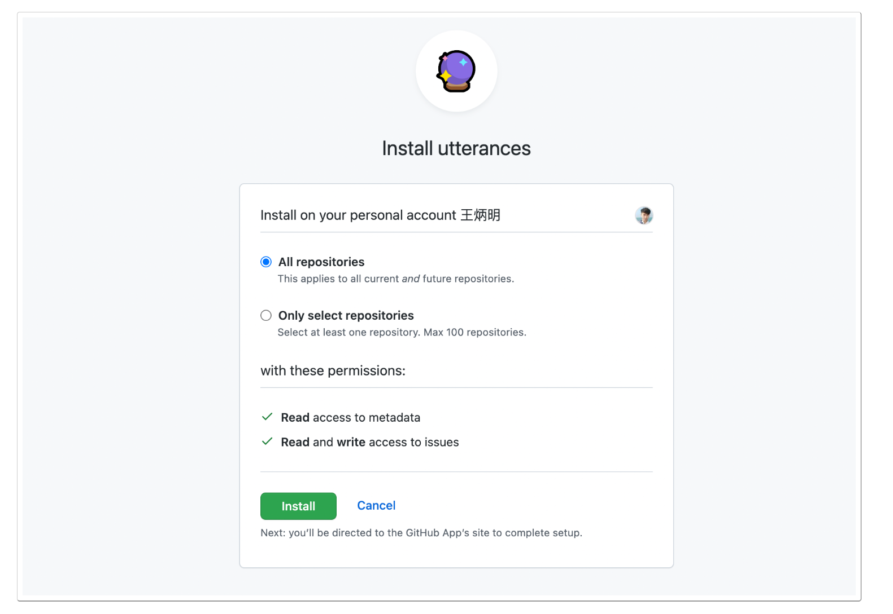
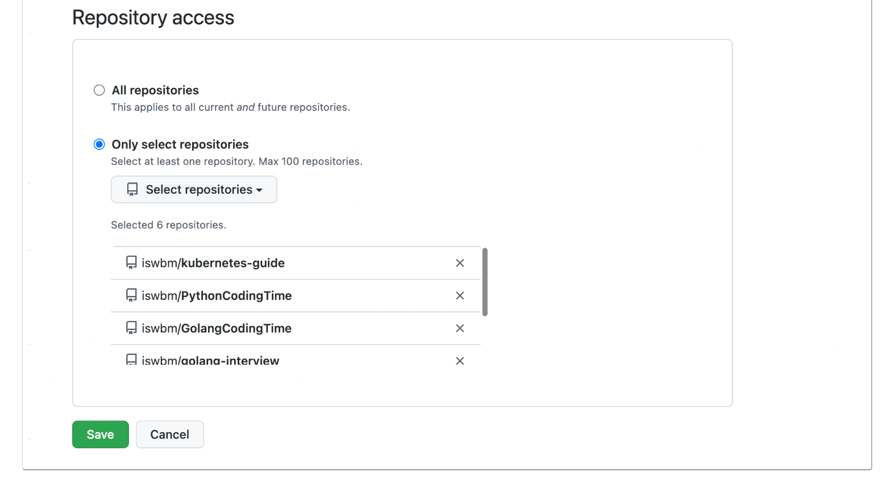
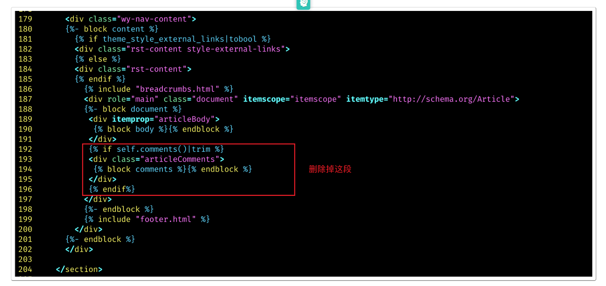
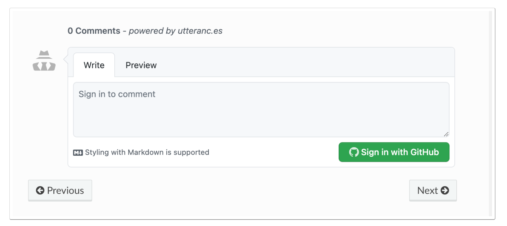

README
打造炫酷个人博客网站，就是这么牛逼。
所谓Sphinx，其实就是一个能将reStructuredText（类似于Markdown）语法的文本文件转换为HTML、PDF、epub等格式的强大工具。
要知道，Python的官方文档就是利用这款工具书写而成的，并且被广泛用于各式各样的说明文档。
Sphinx注意事项
github图片某些图片无法正常显示，需要连接外网才行，国内有限制。
Sphinx制作渲染图片时，文件路径及文件名不能带中文，否则无法显示。
文字和图片中间应该添加空格，不然会挤在一起，影响美观。
make server后，访问http://127.0.0.1:8090可在本地预览。
refers
命令介绍
make html
make docs
make server
github.io创建
GitHub.io 就是GitPage，GitPage 是一个用于展示你的项目和项目网站的托管工具。 简言之我们可以把项目介绍，主页等放到GitHub.io上。
我们能在GitHub.io上做什么
GitHub.io可以存放 .html 文件来展示网页，可用于项目主页也可以搭建个人博客。
例如 Hello World
GitHub.io也可以作为你自己的图床，上传一张图片到仓库，并生成一个远程链接。
例如 测试图片
参考以下搭建：
sphinx环境配置
首先保障python3环境正常，并执行以下命令：
pip3 install sphinx
pip3 install sphinx-rtd-theme
pip3 install myst-parser
sphinx-build –version
sphinx-build 4.3.2
新建sphinx project
sphinx-quickstart docs
Welcome to the Sphinx 4.3.2 quickstart utility.
Please enter values for the following settings (just press Enter to
accept a default value, if one is given in brackets).
Selected root path: docs
You have two options for placing the build directory for Sphinx output.
Either, you use a directory "_build" within the root path, or you separate
"source" and "build" directories within the root path.
> Separate source and build directories (y/n) [n]: y
The project name will occur in several places in the built documentation.
> Project name: wugn_note
> Author name(s): wugn
> Project release []: 0.0.1
If the documents are to be written in a language other than English,
you can select a language here by its language code. Sphinx will then
translate text that it generates into that language.
For a list of supported codes, see
https://www.sphinx-doc.org/en/master/usage/configuration.html#confval-language.
> Project language [en]: en
Creating file /home/pi/wugn/sphinx/docs/source/conf.py.
Creating file /home/pi/wugn/sphinx/docs/source/index.rst.
Creating file /home/pi/wugn/sphinx/docs/Makefile.
Creating file /home/pi/wugn/sphinx/docs/make.bat.
Finished: An initial directory structure has been created.
You should now populate your master file /home/pi/wugn/sphinx/docs/source/index.rst and create other documentation
source files. Use the Makefile to build the docs, like so:
make builder
where "builder" is one of the supported builders, e.g. html, latex or linkcheck.
make html
Running Sphinx v4.3.2
loading translations [en]... done
loading pickled environment... done
building [mo]: targets for 0 po files that are out of date
building [html]: targets for 1 source files that are out of date
updating environment: [config changed ('language')] 1 added, 0 changed, 0 removed
reading sources... [100%] index
looking for now-outdated files... none found
pickling environment... done
checking consistency... done
preparing documents... done
writing output... [100%] index
generating indices... genindex done
writing additional pages... search done
copying static files... done
copying extra files... done
dumping search index in English (code: en)... done
dumping object inventory... done
build succeeded.
The HTML pages are in build/html.
markdown支持修改
增加扩展myst_parser兼容markdown文件。sphinx配置为解析具有扩展名的所有文件 .md 和 .txt 作为 Markdown
diff --git a/source/conf.py b/source/conf.py
index 9e4f81f..30fc640 100644
--- a/source/conf.py
+++ b/source/conf.py
@@ -31,8 +31,15 @@ release = '0.0.1'
# extensions coming with Sphinx (named 'sphinx.ext.*') or your custom
# ones.
extensions = [
+ 'myst_parser'
]
+source_suffix = {
+ '.rst': 'restructuredtext',
+ '.txt': 'restructuredtext',
+ '.md': 'markdown',
+}
+
# Add any paths that contain templates here, relative to this directory.
templates_path = ['_templates']
@@@ -46,7 -41,14 +46,7 @@@ templates_path = ['_templates'
# List of patterns, relative to source directory, that match files and
# directories to ignore when looking for source files.
# This pattern also affects html_static_path and html_extra_path.
--exclude_patterns = []
++exclude_patterns = ['_build', 'Thumbs.db', '.DS_Store']
@@ -54,7 +61,7 @@ exclude_patterns = []
# The theme to use for HTML and HTML Help pages. See the documentation for
# a list of builtin themes.
#
-html_theme = 'alabaster'
+html_theme = 'sphinx_rtd_theme'
@@@ -55,11 -57,11 +55,16 @@@
# a list of builtin themes.
#
html_theme = 'sphinx_rtd_theme'
++html_title = 'wugn'
++html_short_title = 'wugn'
# Add any paths that contain custom static files (such as style sheets) here,
# relative to this directory. They are copied after the builtin static files,
# so a file named "default.css" will overwrite the builtin "default.css".
-ihtml_static_path = ['_static']
+html_static_path = ['_static']
++templates_path = ['_templates']
+
+def setup(app):
- app.add_css_file('default.css')
++ app.add_css_file('default.css')
+
# Add any paths that contain custom static files (such as style sheets) here,
# relative to this directory. They are copied after the builtin static files,
html width
docs/source/_static/default.css让表格长度自适应:
.wy-nav-content {
max-width: none;
}
貌似这个主题不会添加default.css，需要独立添加:
diff --git a/source/conf.py b/source/conf.py
index 9e4f81f..a218b5c 100644
--- a/source/conf.py
+++ b/source/conf.py
@@ -54,9 +61,12 @@ exclude_patterns = []
# The theme to use for HTML and HTML Help pages. See the documentation for
# a list of builtin themes.
#
html_theme = 'sphinx_rtd_theme'
# Add any paths that contain custom static files (such as style sheets) here,
# relative to this directory. They are copied after the builtin static files,
# so a file named "default.css" will overwrite the builtin "default.css".
html_static_path = ['_static']
+
+def setup(app):
+ app.add_css_file('default.css')
make.bat配置
make.bat是windows下的makefile文件：修改SOURCEDIR文件指向当前目录，然后将source目录下
_static及conf.py移动到当前根目录：

增加
docs和server编译指令：docs编译指令，主要是将_build\html编译目录全部移动到docs目录下，因为docs目录才是github必须指定的效果渲染目录。make server这条命令，可以开一个本地http server，这样你可以http://127.0.0.1:8080在本地预览。这个
make server预览的不是docs目录下的，是_build/html目录中的临时文件预览。
index dc1312a..88ef067 100644
--- a/make.bat
+++ b/make.bat
@@ -7,8 +7,12 @@ REM Command file for Sphinx documentation
if "%SPHINXBUILD%" == "" (
set SPHINXBUILD=sphinx-build
)
-set SOURCEDIR=source
-set BUILDDIR=build
+set SOURCEDIR=.
+set BUILDDIR=_build
+
+if "%1" == "" goto help
+if "%1" == "server" goto server
+if "%1" == "docs" goto docs
%SPHINXBUILD% >NUL 2>NUL
if errorlevel 9009 (
@@ -23,9 +27,20 @@ if errorlevel 9009 (
exit /b 1
)
-if "%1" == "" goto help
-
+echo F | xcopy README.md index.md /i /y
%SPHINXBUILD% -M %1 %SOURCEDIR% %BUILDDIR% %SPHINXOPTS% %O%
+del index.md
+goto end
+
+:docs
+rmdir /s /q docs
+xcopy /S /I /Q /Y /F _build\html docs
+type nul > docs\.nojekyll
+echo F | xcopy CNAME docs /i /y
+goto end
+
+:server
+python -m http.server -d %BUILDDIR%\html 8080
goto end
:help
增加git忽略
.gitignore_build是Sphinx生成的编译文件，无需上传：
.DS_Store
_build
log.txt
.ipynb_checkpoints
make html && make docs
将个人所有文档放入到src文件钟，现在可以开始编译渲染文件了，执行make html：
F:\pax\wuguangnan110.github.io>make html
目标 index.md 是文件名
还是目录名
(F = 文件，D = 目录)? F
F:README.md
复制了 1 个文件
正在运行 Sphinx v5.1.1
正在加载 Pickle 序列化的环境... 完成
myst v0.18.0: MdParserConfig(commonmark_only=False, gfm_only=False, enable_extensions=[], disable_syntax=[], all_links_external=False, url_schemes=('http', 'https', 'mailto', 'ftp'), ref_domains=None, highlight_code_blocks=True, number_code_blocks=[], title_to_header=False, heading_anchors=None, heading_slug_func=None, footnote_transition=True, words_per_minute=200, sub_delimiters=('{', '}'), linkify_fuzzy_links=True, dmath_allow_labels=True, dmath_allow_space=True, dmath_allow_digits=True, dmath_double_inline=False, update_mathjax=True, mathjax_classes='tex2jax_process|mathjax_process|math|output_area')
正在构建 [mo]： 0 个 po 文件的目标文件已过期
正在构建 [html]： 0 个源文件的目标文件已过期
正在更新环境：有 0 个新增文件，有 30 个文件已被修改，有 0 个文件已被移除
正在读取源文件……[100%] src/0018_hal_function/docs/0001_Android_HIDL服务调用方式(java及C++)
···省略···
正在生成索引... genindex 完成
正在写入附加页面... search 完成
正在复制图像文件……[100%] src/0013_项目相关问题/docs/images/0001_mtk.png
正在复制可下载文件……[100%] src/0012_system_stability/docs/refers/0001_open_uart_debug.patchB422_RELEASE.bin.pdf_spreadsheet.xlsm
正在复制静态文件... 完成
正在复制额外文件... 完成
正在导出 English (code: en) 的搜索索引... 完成
正在导出对象清单... 完成
构建成功，428 条警告。
HTML 页面保存在 _build\html 目录。
make docs:
F:\pax\wuguangnan110.github.io>make docs
系统找不到指定的文件。
复制了 850 个文件
F:CNAME
复制了 1 个文件
github配置
*首先要指定渲染目录，如下设置： 
个人网址配置
在根目录增加CNAME关联自己的网址CNAME:
wugn.tech
同时域名解析如下： 
显示效果
然后将所有文件上传即可，等待github deployment完成即可看到效果： 

增加评论系统
安装 utterances
访问utterances应用程序 ，然后点击 Install 按钮进行安装

在安装时，可以立即选择是否限制其访问的仓库，若安装时忘记设置了，也可以在安装后再次选择。
只要再次访问 utterances 应用程序，就会显示配置的界面
点进去就能更新配置，选择完直接 Save 。

我的文档使用的是 Sphinx + rtd 主题，因此找到 sphinx_rtd_theme 所在的目录，比如我的目录是C:\Users\Administrator\AppData\Local\Programs\Python\Python310\Lib\site-packages\sphinx_rtd_theme
在该目录下新建 comments.html 文件，内容如下:
<comments>
<script src="https://utteranc.es/client.js"
repo="iswbm/magic-python"
issue-term="pathname"
theme="github-light"
crossorigin="anonymous"
async>
</script>
</comments>
其中你需要根据自己的情况进行调整的字段只有 repo，填写你评论要存放在哪个 github 仓库。
定义了 comments 的模板文件后，要在 layout.html 中引用它
但由于原先 layout.html 已经预留了 comments 的内容，先将其删除

替换成
<div class="articleComments">
{% include "comments.html" %}
</div>
编译查看效果
执行 make html 重新编译文档的静态 html 文件，再次查看网页，就会发现在文档的尾部出现了期待的评论区

想要在文章下评论，就得先登陆 Github 授权一下,登陆并授权之后，你的 Github 头像出现了，是可以评论的状态,utterances 的评论是放在 issue 里的，因此评论这边也是要支持 markdown
总结一下
utterances 与 gitalk 对比一下，缺点不少，比如：
gitalk 可以通过 如下容器定义评论区的位置，而 utterances 则不行（反正我没有找到对应方法），需要你有动手能力去定义模板。 utterances 不支持在评论区直接引用他人的评论进行多级回复 当有评论时 utterances 的评论框是在所有的评论的下方，不太符合用户逻辑 即使 utterances 有如此之多的缺点，但 utterances 不需要手动去创建 issue ，仅凭这一点，在我看来，就可以秒杀 gitalk ，希望 gitalk 早日改进支持吧。
现在我的六个在线文档，都已经加上 utterances，大家在查阅学习时，若有问题可以在评论区提出来噢：